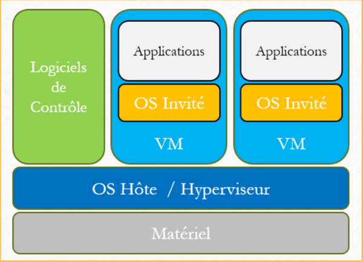

1. R4.DevCloud.09 Fondamentaux de la conteneurisation
Contexte et ancrage professionnel
La conteneurisation des services et des applications est l’un des outils majeurs du Cloud.
Elle offre une grande flexibilité dans la conception et la maintenance des infrastructures.
Elle facilite également la portabilité et la gestion du cycle de vie des services et des applications.
1.1 Rappel Virtualisation
Un Hyperviseur (Promox, VMware, ..) simule une ou plusieurs machines physiques. Ces machines virtuelles (VM) embarquent leur propres système d’exploitation (OS Invité)

MACHINES VIRTUELLES :
Emulation d’un ordinateur complet
Un Hyperviseur permet de « simuler » plusieurs ordinateurs sur une seule machine physique
Chaque VM :
Possède son propre système d’exploitation
Contient l’ensemble de services et applications à déployer
AVANTAGES :
Intéressant pour remplacer un nombre important de serveurs
Système complétement isolé et indépendants les uns des autres.
On peut avoir à la fois des VM sous Linux ou sous Windows
INCONVENIENTS :
Très gourmand en ressources processeur et mémoire même pour des petites applications
Des images lourdes à sauvegarder et à déployer (> 10 Go)
Délais de démarrage de plusieurs minutes
1.2 Containers
Les containers font eux appels à l’OS de la machine hôte et embarquent essentiellement les services et les applications à déployer
CONTAINERS :
Pas de “simulation” du matériel
On ne virtualise que l’OS qui est dépendant du noyau de la machine hôte
Chaque Container :
Ne contient que le minimum de services nécéssaires
Partage le noyau de l’OS hôte avec les autres
AVANTAGES :
Très petites images (< 1Go) - Facile à déployer et à sauvegarder
Délais de démarrage de quelques secondes
Consomme peu de ressources mémoires
INCONVENIENT:
Pas de diversification des OS (Essentiellement Linux)
Le partage d’un même OS hôte peut poser des problèmes de sécurité
La persistance des données doit être gérée hors container
2. Docker : Création et Déploiement des Containers
Docker est une plate-forme ouverte pour le développement, la livraison et l’exécution d’applications.
Docker vous permet de séparer vos applications de votre infrastructure afin de livrer le logiciel rapidement.
Avec Docker, vous pouvez gérer votre infrastructure de la même manière que vous gérez vos applications.
Docker offre la possibilité de conditionner et d’exécuter une application dans un environnement vaguement isolé appelé conteneur.
L’isolation et la sécurité vous permettent d’exécuter plusieurs conteneurs simultanément sur un hôte donné.
Les conteneurs sont légers et contiennent tout le nécessaire pour exécuter l’application, vous n’avez donc pas besoin de vous fier à ce qui est actuellement installé sur l’hôte.
Vous pouvez facilement partager des conteneurs pendant que vous travaillez et vous assurer que toutes les personnes avec lesquelles vous partagez reçoivent le même conteneur qui fonctionne de la même manière.
2.1 Historique
2008 |
Solomon Hykes développe |
2010 |
|
2013 |
|
2014 |
|
2019 |
Le produit |
2.2 Un peu de théorie
La technologie des containers n’a pas été inventée par Docker.
Mais celui-ci la considérablement amélioré en y ajoutant de nouveaux concepts et des outils simples à mettre en œuvre.
A l’origine :
LXC :
Linux ContainersLes
NameSpacesqui permettent d’isoler les ressources et déterminent ce que peut voir un processus . On peut ainsi isolerles ressouces réseaux,
le système de fichiers,
les privilèges utilisateurs
…
Les
CGroupsqui permettent de limiter l’utilisation des ressources par le container :Processeur,
Mémoire,
Trafic réseau …
Les ajouts de Docker:
Docker-Cli: Une interface en ligne de commandeDocker Engine: pour faire tourner les containers comme des processusDocker-Hub: Un dépot (repository) d’Images de containers prédéfiniesLa gestion des données persistantes dans des volumes
La gestion d’un réseau virtuel pour les containers
2.3 Architecture Docker
Docker utilise une architecture client-serveur.
Le client Docker communique avec le démon Docker , qui effectue le gros du travail de création, d’exécution et de distribution de vos conteneurs Docker.
Le client et le démon Docker peuvent s’exécuter sur le même système, ou vous pouvez connecter un client Docker à un démon Docker distant.
Le client et le démon Docker communiquent à l’aide d’une API REST, via des sockets UNIX ou une interface réseau.
Un autre client Docker est Docker Compose, qui vous permet de travailler avec des applications composées d’un ensemble de conteneurs.

2.3.1 Container
Processus qui va héberger nos applications et nos services.
Un conteneur est une instance exécutable d’une image de référence. Vous pouvez
créer,
démarrer,
arrêter,
déplacer ou
supprimer un conteneur à l’aide de l’API ou de la CLI Docker.
Vous pouvez
connecter un conteneur à un ou plusieurs réseaux,
y attacher un stockage,
ou même créer une nouvelle image en fonction de son état actuel.
Par défaut, un conteneur est relativement bien isolé des autres conteneurs et de sa machine hôte.
Vous pouvez contrôler son degré d’isolement par rapport aux autres conteneurs ou à la machine hôte
réseau,
stockage,
…
Un conteneur est défini par son image ainsi que par les options de configuration que vous lui fournissez lorsque vous le créez ou le démarrez. Lorsqu’un conteneur est supprimé, toutes les modifications apportées à son état qui ne sont pas stockées dans le stockage persistant disparaissent.
2.3.2 Image
Une image est un modèle en lecture seule contenant des instructions pour créer un conteneur
Docker.Souvent, une image est basée sur une autre image, avec quelques personnalisations supplémentaires.
Par exemple, vous pouvez créer une image basée sur l’image debian, mais qui installe le serveur Web Apache et votre application, ainsi que les détails de configuration nécessaires pour faire fonctionner votre application.
2.3.3 Volume
Dossier local sur la machine hôte qui va permettre de conserver les données après l’arrêt ou la destruction du container.
Les données manipulées dans un container ne sont pas persistantes si elles ne sont pas stockées dans un volume de données.
2.3.4 Docker Daemon (Docker Engine)
Le démon Docker ( dockerd)
écoute les requêtes de l’API Docker
gère les objets Docker tels que
les images,
les conteneurs,
les réseaux et
les volumes.
Un démon peut également communiquer avec d’autres démons pour gérer les services Docker.
2.3.5 Docker Client (Docker Engine)
Le client Docker ( docker) est le principal moyen utilisé par de nombreux utilisateurs Docker pour interagir avec Docker.
Lorsque vous utilisez des commandes telles que
docker run, le client envoie ces commandes à dockerd, qui les exécute.
2.3.6 Dockerfile
Nom du fichier qui va permettre de créer une image.
Dockerfilecontient la description de tout ce que doit contenir l”image et donc par extension le container.
2.3.7 Docker Compose
Une application qui va permettre de lancer plusieurs containers avec une seule commande, permettant ainsi de créer une stack (pile) de containers travaillant ensemble.
2.3.8 Docker Desktop (pas utilisé à l’IUT)
L’application de gestion à installer pour démarrer
Dockeret gérer les containers, les images, les volumes et tous les éléments associésDocker Desktopinclut le daemon Docker (dockerd), le client Docker (docker),Docker Compose, Docker Content Trust, Kubernetes et Credential Helper.
2.3.9 Docker Registries
Un registre Docker stocke les images Docker.
Docker Hubest un registre public que tout le monde peut utiliser.Dockerest configuré pour rechercher des images surDocker Hubpar défaut. Vous pouvez même exécuter votre propre registre privé.Lorsque vous utilisez les commandes
docker pulloudocker run, les images requises sont extraites de votre registre configuré.Lorsque vous utilisez la
docker pushcommande, votre image est poussée vers votre registre configuré.
2.4 Containers
2.4.1 Exemple de commande docker run
La commande suivante
exécute un conteneur
debian,se connecte de manière interactive à votre session de ligne de commande locale
exécute
/bin/bash.
root@debian10:/home/etudiant# docker run -i -t debian /bin/bash
Unable to find image 'debian:latest' locally
latest: Pulling from library/debian
f606d8928ed3: Pull complete
Digest: sha256:e538a2f0566efc44db21503277c7312a142f4d0dedc5d2886932b92626104bff
Status: Downloaded newer image for debian:latest
root@2f36cc40ce93:/#
Remarque (en supposant que vous utilisez la configuration de registre par défaut) :
Si vous n’avez pas l’image
debianlocalement,Dockerl’extrait de votre registre configuré, comme si vous aviez exécutédocker pull debianmanuellement.Dockercrée un nouveau conteneur, comme si vous aviez exécuté undocker container createcommande manuellement.Dockeralloue au conteneur un système de fichiers en lecture-écriture. Cela permet à un conteneur en cours d’exécution de créer ou de modifier des fichiers et répertoires dans son système de fichiers local.Dockercrée une interface réseau avec une adresse IP au conteneur. Par défaut, les conteneurs peuvent connecter à des réseaux externes à l’aide de la connexion réseau de la machine hôte.Dockerdémarre le conteneur et exécute/bin/bash. Le conteneur s’exécute de manière interactive et est attaché à votre terminal (-iet-t).exittermine la commande/bin/bash, le conteneur s’arrête mais n’est pas supprimé. Vous pouvez le redémarrer ou le supprimer.
2.4.2 Quelques commandes pour les conteneurs
COMMANDE |
USAGE |
|---|---|
|
crée et lance un container à partir de l’image spécifiée |
|
liste des containers en cours d’exécution -a pour voir tous les containers |
|
lance une commande dans un container |
|
arrête un container |
|
redémarre un container existant |
|
supprime un container |
|
crée une nouvelle image à partir d’un container |
2.4.3 docker run en détail
OPTIONS |
USAGE |
|---|---|
|
permet de nommer le container |
|
lance le container en arrière plan |
|
lance le container avec un terminal interactif. Pour lancer un shell par exemple |
|
permet de rediriger un port du container vers un port local (localhost) |
|
permet de faire persister les données du container dans un dossier local |
Container: deux grands principes à comprendre
Un container ne reste actif que si un processus (un service) est actif dans celui-ci.
Les modifications faites dans un container sont perdues à l’arrêt de celui-ci, sauf si on utilise des volumes. (Option - v)
Persistance des données
Commit : docker commit <Container> <Image>
Un des moyens de conserver les données et modification faites dans un formulaire est de recréer une nouvelle image à partir de celui-ci.
Si cette méthode est effectivement la plus simple à mettre en oeuvre, il faut quand même prendre en compte ces considérations :
AVANTAGES :
Le rédéploiement du container sur une autre machine est très simple et rapide puisque l’image contient toutes les modifications, y compris les données utilisateurs qui auraient pu être saisies ou modifiées.
Si on à ajouter des services ou des librairies dans le container, c’est la meilleure méthode à adopter.
INCONVENIENTS:
Si la méthode est effectivement bien adaptée à l’ajout de services ou de librairies, elle ne l’est pas pour les données. En Effet chaque commit va enregistrer les différences entre l’image initiale et le container et créer une nouvelle couche dans la nouvelle image. Conséquence des images de plus en plus grosse, donc plus longue à copier et à redéployer.
Volumes
Un volume Docker est un emplacement (un dossier) créé sur la machine hôte qui est partagé avec le container. En terme Lunixien, on parle de « monter » le volume dans le container.
ajouter des lignes dans le corp
Il existe deux façons de créer les volumes :
Utiliser la commande
docker volumeUtiliser l’option
-vqui créer le volume en même temps que le containerdocker run -v local:distant <image>
local désigne alors le dossier local sur votre machine
distant désigne le dossier que vous voulez associé sur le container
Exemple -v /home/etudiant/www:/var/www
Toutes les données écrites dans
/home/etudiant/wwwseront visibles sur le container dans/var/www.A la suppression du container, les données dans
/home/etudiant/wwwseront conservées et donc réutilisables si lorsque l’on relancera le container avec la même option.
A noter que l’on peut aussi simplement nommé un volume local sans préciser de chemin. Celui-ci sera alors créé dans le dossier /var/lib/docker/overlay/ de votre machine et restera aussi accessible même après la destruction du container.
Images
Docker et la gestion du réseau
Connecter des containers à un réseau virtuel associé à un driver :
none : isolation des containers sans possibilité de communication avec l’extérieur
bridge : interface docker0, driver par défaut, communication entre container mais pas accessible depuis l’extérieur host : les containers ont la même adresse IP que la machine hôte (pas d’isolation réseau)
overlay : mise en réseau de plusieurs machines hôtes utilisant docker
macvlan : gestion des vlans et addresses physiques par container
Mode Bridge
Création d’un réseau nommé net1Bridge
root@debian10:~# docker network create --driver bridge --subnet=192.168.1.0/24 --gateway=192.168.1.1 net1Bridge
2ccd2d38b4c673e0d3f4aeaa20ff0d4b138e8e4dfb8488486d1acd91ff6021aa
root@debian10:~# docker network ls
NETWORK ID NAME DRIVER SCOPE
95f450cbb8d5 bridge bridge local
f04eb74b2fff host host local
2ccd2d38b4c6 net1Bridge bridge local
244ff986ac02 none null local
root@debian10:~# docker network inspect net1Bridge
[
{
"Name": "net1Bridge",
"Id": "2ccd2d38b4c673e0d3f4aeaa20ff0d4b138e8e4dfb8488486d1acd91ff6021aa",
"Created": "2022-10-19T17:04:32.426718664+02:00",
"Scope": "local",
"Driver": "bridge",
"EnableIPv6": false,
"IPAM": {
"Driver": "default",
"Options": {},
"Config": [
{
"Subnet": "192.168.1.0/24",
"Gateway": "192.168.1.1"
}
]
},
"Internal": false,
"Attachable": false,
"Ingress": false,
"ConfigFrom": {
"Network": ""
},
"ConfigOnly": false,
"Containers": {},
"Options": {},
"Labels": {}
}
]
Création de deux containers debG et debD à partir d’une image debian associé au réseau net1Bridge
-d Run container in background and print container ID
-i Keep STDIN open even if not attached
-t Allocate a pseudo-TTY
root@debian10:~# docker run -dit --name debG --network net1Bridge debian
4bec91791c34be56041ab378ef62391653e1c098d53776e054d793ac13247718
root@debian10:~# docker run -dit --name debD --network net1Bridge debian
f32f5cd55b0a68fa8f88b2f4aa3a2c10b724dad11b3a151b2c49a109bbfb29cc
On vérifie le lancement des containers
root@debian10:~# docker container ls
CONTAINER ID IMAGE COMMAND CREATED STATUS PORTS NAMES
f32f5cd55b0a debian "bash" 14 minutes ago Up 14 minutes debD
4bec91791c34 debian "bash" 32 minutes ago Up 32 minutes debG
On vérifie les @IP associées aux containers
root@debian10:~# docker network inspect net1Bridge
[
{
"Name": "net1Bridge",
"Id": "2ccd2d38b4c673e0d3f4aeaa20ff0d4b138e8e4dfb8488486d1acd91ff6021aa",
"Created": "2022-10-19T17:04:32.426718664+02:00",
"Scope": "local",
"Driver": "bridge",
"EnableIPv6": false,
"IPAM": {
"Driver": "default",
"Options": {},
"Config": [
{
"Subnet": "192.168.1.0/24",
"Gateway": "192.168.1.1"
}
]
},
"Internal": false,
"Attachable": false,
"Ingress": false,
"ConfigFrom": {
"Network": ""
},
"ConfigOnly": false,
"Containers": {
"4bec91791c34be56041ab378ef62391653e1c098d53776e054d793ac13247718": {
"Name": "debG",
"EndpointID": "d128e36f1fd5c334e0c6bb7ed6f47e256a728d0e9789d8b33841701109c89a01",
"MacAddress": "02:42:c0:a8:01:02",
"IPv4Address": "192.168.1.2/24",
"IPv6Address": ""
},
"f32f5cd55b0a68fa8f88b2f4aa3a2c10b724dad11b3a151b2c49a109bbfb29cc": {
"Name": "debD",
"EndpointID": "22f833a9100e2438562a5b15a1045e9981c282ecb25447cad431915b6c59c12e",
"MacAddress": "02:42:c0:a8:01:03",
"IPv4Address": "192.168.1.3/24",
"IPv6Address": ""
}
},
"Options": {},
"Labels": {}
}
]
Lancement avec exec de commande dans les containers
root@debian10:~# docker exec debG ip addr
1: lo: <LOOPBACK,UP,LOWER_UP> mtu 65536 qdisc noqueue state UNKNOWN group default qlen 1000
link/loopback 00:00:00:00:00:00 brd 00:00:00:00:00:00
inet 127.0.0.1/8 scope host lo
valid_lft forever preferred_lft forever
9: eth0@if10: <BROADCAST,MULTICAST,UP,LOWER_UP> mtu 1500 qdisc noqueue state UP group default
link/ether 02:42:c0:a8:01:02 brd ff:ff:ff:ff:ff:ff link-netnsid 0
inet 192.168.1.2/24 brd 192.168.1.255 scope global eth0
valid_lft forever preferred_lft forever
root@debian10:~# docker exec -it debD ping -c1 192.168.1.2
PING 192.168.1.2 (192.168.1.2) 56(84) bytes of data.
64 bytes from 192.168.1.2: icmp_seq=1 ttl=64 time=0.075 ms
--- 192.168.1.2 ping statistics ---
1 packets transmitted, 1 received, 0% packet loss, time 0ms
rtt min/avg/max/mdev = 0.075/0.075/0.075/0.000 ms
Remarque : il a fallu installer ping et ip dans les containers (pas présent sur capture)
docker exec -it debD apt-get update
docker exec -it debD apt-get install iputils-ping
docker exec -it debG apt-get update
docker exec -it debG apt-get install iroute2
Un aide-mémoire pour Docker Introduction
Docker vous permet d’empaqueter facilement vos applications et services dans des conteneurs afin de pouvoir les utiliser partout. Cependant, lorsque vous travaillez avec Docker, il est également facile d’accumuler un nombre excessif d’images, de conteneurs et de volumes de données inutilisés qui alourdissent la sortie et consomment de l’espace disque.
Docker vous donne tous les outils dont vous avez besoin pour nettoyer votre système de la ligne de commande. Ce guide de type aide-mémoire fournit une référence rapide aux commandes qui sont utiles pour libérer de l’espace disque et garder votre système organisé en supprimant les images, conteneurs et volumes inutilisés de Docker.
Comment utiliser ce guide :
Ce guide est au format aide-mémoire avec des extraits de lignes de commande autonomes
Sautez à la section qui correspond à la tâche que vous essayez d’accomplir.
La syntaxe de substitution des commandes, commandant $( command), utilisée dans les commandes est disponible dans de nombreux shell populaires tels que bash, zsh et Windows Powershell. Élimination de toutes les images, conteneurs, volumes et réseaux inutilisés ou en suspens
Docker fournit une commande unique qui nettoiera toutes les ressources - images, conteneurs, volumes et réseaux - qui sont en suspens (non associées à un conteneur) :
docker system prune
Pour supprimer en plus tous les conteneurs arrêtés et toutes les images non utilisées (pas seulement les images en suspens), ajoutez l’indicateur -a à la commande :
docker system prune -a
Suppression des images de Docker Supprimer une ou plusieurs images spécifiques
Utilisez la commande docker images avec le drapeau -a pour localiser l’ID des images que vous voulez supprimer. Cela vous montrera toutes les images, y compris les couches d’images intermédiaires. Lorsque vous avez localisé les images que vous voulez supprimer, vous pouvez passer leur ID ou leur étiquette à docker rmi :
Lister :
docker images -a
Supprimer :
docker rmi Image Image
Supprimer les images en suspens
Les images de Docker sont constituées de plusieurs couches. Les images en suspens sont des couches qui n’ont aucune relation avec les images marquées. Elles n’ont plus d’utilité et consomment de l’espace disque. Elles peuvent être localisées en ajoutant le drapeau filtre, -f avec une valeur de dangling=true à la commande docker images. Lorsque vous êtes sûr de vouloir les supprimer, vous pouvez utiliser la commande docker images purge :
Remarque : Si vous construisez une image sans la tagger, l’image apparaîtra dans la liste des images en suspens car elle n’a pas d’association avec une image taguée. Vous pouvez éviter cette situation en fournissant une balise lors de la construction, et vous pouvez tagger rétroactivement une image avec la commande docker tag.’
Lister :
docker images -f dangling=true
Supprimer :
docker images purge
Suppression d’images selon un modèle
Vous pouvez trouver toutes les images qui correspondent à un modèle en utilisant une combinaison de docker images et grep. Une fois que vous êtes satisfait, vous pouvez les supprimer en utilisant awk pour passer les identifiants à docker rmi. Notez que ces utilitaires ne sont pas fournis par Docker et ne sont pas nécessairement disponibles sur tous les systèmes :
Lister :
docker images -a | grep "pattern"
Supprimer :
docker images -a | grep "pattern" | awk '{print $3}' | xargs docker rmi
Supprimer toutes les images
Toutes les images de Docker sur un système peuvent être listées en ajoutant -a à la commande docker images. Une fois que vous êtes sûr de vouloir toutes les supprimer, vous pouvez ajouter le drapeau -q pour passer l’ID de l’image au docker rmi :
Lister :
docker images -a
Supprimer :
docker rmi $(docker images -a -q)
Suppression de conteneurs Supprimer un ou plusieurs conteneurs spécifiques
Utilisez la commande docker ps avec le drapeau -a pour localiser le nom ou l’ID des conteneurs que vous voulez supprimer.
Lister :
docker ps -a
Supprimer :
docker rm ID_or_Name ID_or_Name
Supprimer un conteneur à la sortie
Si vous savez, lorsque vous créez un conteneur, que vous ne voudrez pas le conserver une fois que vous aurez terminé, vous pouvez lancer le programme docker run –rm pour le supprimer automatiquement à sa sortie.
Exécuter et supprimer :
docker run --rm image_name
Supprimer tous les conteneurs quittés
Vous pouvez localiser les conteneurs en utilisant le docker ps -a et les filtrer selon leur statut : créé, redémarré, en cours d’exécution, en pause ou quitté. Pour consulter la liste des conteneurs quittés, utilisez le drapeau -f pour filtrer en fonction de leur statut. Lorsque vous avez vérifié que vous voulez supprimer ces conteneurs, utilisez -q pour transmettre les ID à la commande docker rm.
Lister :
docker ps -a -f status=exited
Supprimer :
docker rm $(docker ps -a -f status=exited -q)
Supprimer les conteneurs en utilisant plusieurs filtre
Les filtres de Docker peuvent être combinés en répétant le drapeau filter avec une valeur supplémentaire. Il en résulte une liste de conteneurs qui remplissent l’une ou l’autre de ces conditions. Par exemple, si vous voulez supprimer tous les conteneurs marqués comme étant soit Créé (un état qui peut survenir lorsque vous exécutez un conteneur avec une commande non valide) soit Quitté, vous pouvez utiliser deux filtres :
Lister :
docker ps -a -f status=exited -f status=created
Supprimer :
docker rm $(docker ps -a -f status=exited -f status=created -q)
Supprimer des conteneurs selon un modèle
Vous pouvez trouver tous les containers qui correspondent à un modèle en utilisant une combinaison de docker ps et grep. Lorsque vous êtes satisfait de la liste que vous souhaitez supprimer, vous pouvez utiliser awk et xargs pour fournir l’ID à docker rmi. Notez que ces utilitaires ne sont pas fournis par Docker et ne sont pas nécessairement disponibles sur tous les systèmes :
Lister :
docker ps -a | grep "pattern”
Supprimer :
docker ps -a | grep "pattern" | awk '{print $3}' | xargs docker rmi
Arrêter et supprimer tous les conteneurs
Vous pouvez consulter les conteneurs sur votre système avec docker ps. L’ajout du drapeau -a affichera tous les conteneurs. Lorsque vous êtes sûr de vouloir les supprimer, vous pouvez ajouter le drapeau -q pour fournir les identifiants aux commandes docker start et docker rm :
Lister :
docker ps -a
Supprimer :
docker stop $(docker ps -a -q)
docker rm $(docker ps -a -q)
Suppression de volumes Supprimer un ou plusieurs volumes spécifiques - Docker 1.9 et suivants
Utilisez la commande docker volume ls pour localiser le ou les noms de volume que vous souhaitez supprimer. Ensuite, vous pouvez supprimer un ou plusieurs volumes avec la commande docker volume rm :
Lister :
docker volume ls
Supprimer :
docker volume rm volume_name volume_name
Supprimer des volumes en suspens - Docker 1.9 et suivants
Étant donné que le principe des volumes est d’exister indépendamment des conteneurs, lorsqu’un conteneur est retiré, un volume n’est pas automatiquement retiré en même temps. Lorsqu’un volume existe et n’est plus connecté à aucun conteneur, on l’appelle un volume en suspens. Pour les localiser afin de confirmer que vous voulez les retirer, vous pouvez utiliser la commande docker volume ls avec un filtre pour limiter les résultats aux volumes en suspens. Lorsque vous êtes satisfait de la liste, vous pouvez tous les supprimer avec docker volume prune :
Lister :
docker volume ls -f dangling=true
Supprimer :
docker volume prune
Supprimer un conteneur et son volume
Si vous avez créé un volume sans nom, il peut être supprimé en même temps que le conteneur avec le drapeau -v. Notez que cela ne fonctionne qu’avec les volumes non nommés. Lorsque le conteneur est supprimé avec succès, son ID est affiché. Notez qu’aucune référence n’est faite à la suppression du volume. S’il n’est pas nommé, il est supprimé silencieusement du système. S’il est nommé, il reste silencieusement présent.
Supprimer :
docker rm -v container_name
Conclusion
Ce guide couvre certaines des commandes courantes utilisées pour supprimer les images, les conteneurs et les volumes avec Docker. Il existe de nombreuses autres combinaisons et drapeaux qui peuvent être utilisés avec chacun d’entre eux. Pour un guide complet sur ce qui est disponible, consultez la documentation Docker pour docker system prune, docker rmi, docker rm et docker volume rm. S’il existe des tâches courantes de nettoyage que vous souhaitez voir dans le guide, veuillez demander ou faire des suggestions dans les commentaires.

IUT Lannion © 2022 by R&T is licensed under CC BY-NC-ND 4.0